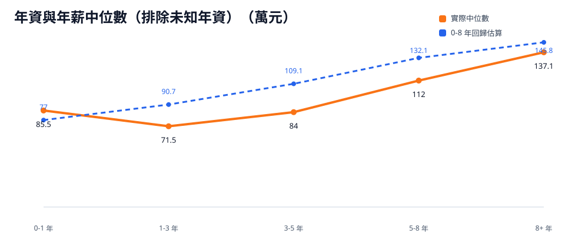

以總年資分箱觀察薪資變化。年薪中位數從 1-3 年的 71.5 萬，提升到 5-8 年的 112 萬與 8+ 年的 137.1 萬。
分析見解
- 1-3 年年薪中位數為 71.5 萬，3-5 年為 84 萬；前三到五年應優先累積可展示的技術深度與完整交付經驗。
- 5-8 年年薪中位數達 112 萬，比 3-5 年增加 28 萬；這個區間是從執行者轉向獨立負責模組與系統設計的薪資分水嶺。
- 8+ 年年薪中位數達 137.1 萬，P75 達 185.2 萬；資深工程師要把影響力延伸到架構決策、跨團隊協作與人才培養。
主要觀察
年資提升帶來的薪資差距集中在責任範圍升級。讀者在 3-5 年前要完成技術基礎與專案交付紀錄；進入 5-8 年後，薪資競爭力來自系統設計、故障排除、跨團隊推進與技術判斷。
1-3 年低於 0-1 年的解讀
- 來源：Gemini。0-1 年樣本容易集中在高起薪族群，例如半導體、外商與頂尖軟體工程職缺；這會拉高新鮮人區間的中位數。
- 1-3 年樣本涵蓋更多產業與職能，包含中小型企業、傳統產業與轉職初期工作者；樣本組成變廣後，中位數會往市場基準收斂。
- 這不代表工作第二年薪水會倒退。更實用的解讀是：1-5 年是累積與換位期，5 年後能主導系統、跨團隊交付或轉向高薪產業的人，薪資級距開始拉開。
0-8 年回歸估算
- 以 0-8 年共 456 筆樣本做簡單線性迴歸，估算公式為：年薪 = 72.4 + 9.2 × 年資（萬元）。
- 係數解讀：0-8 年區間內，年資每增加 1 年，年薪估算值增加 9.2 萬。
- 模型 R² 為 0.13；年資提供基準線，產業、職能、公司層級與跳槽時點決定實際落點。

圖表排除未知年資；年資區間的核心解讀是責任範圍升級帶來的薪資差距。
年資區間統計
| 年資區間 | 樣本數 | 資料可信度 | 月薪中位數 | 月薪 P25-P75 | 年薪中位數 | 年薪 P25-P75 |
|---|---|---|---|---|---|---|
| 0-1 年 | 72 | 可參考 | 6 | 4.3 - 7.5 | 85.5 | 54.9 - 104.3 |
| 1-3 年 | 123 | 可參考 | 5.3 | 4.2 - 6.7 | 71.5 | 54.5 - 91 |
| 3-5 年 | 122 | 可參考 | 6 | 5 - 8 | 84 | 70 - 112 |
| 5-8 年 | 116 | 可參考 | 8 | 6.2 - 10 | 112 | 84.4 - 157 |
| 8+ 年 | 72 | 可參考 | 9 | 7.4 - 14.1 | 137.1 | 112 - 185.2 |
小樣本補充
| 年資區間 | 樣本數 | 資料可信度 | 月薪中位數 | 月薪 P25-P75 | 年薪中位數 | 年薪 P25-P75 |
|---|---|---|---|---|---|---|
| 未知 | 9 | 樣本偏少 | 5.5 | 5.2 - 6.4 | 71.5 | 62.4 - 96 |